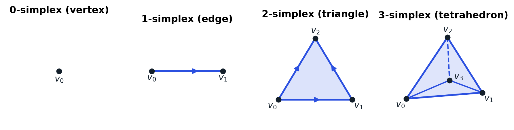
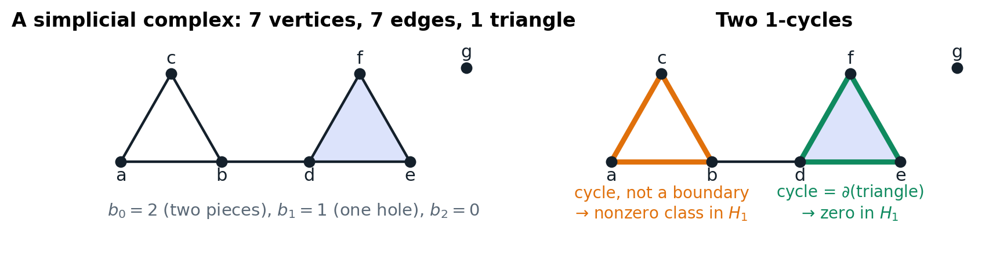
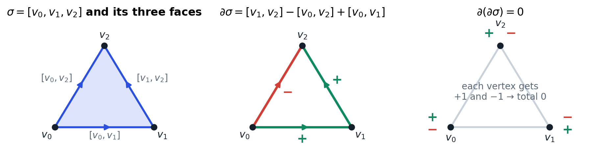
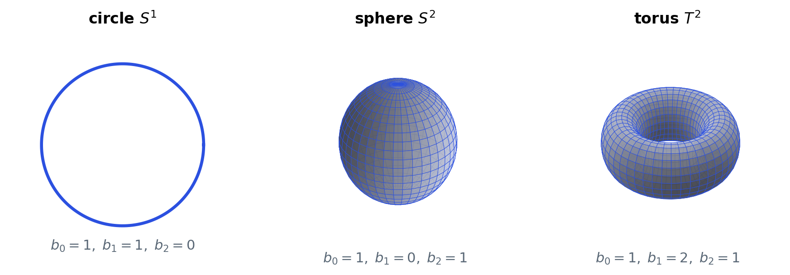
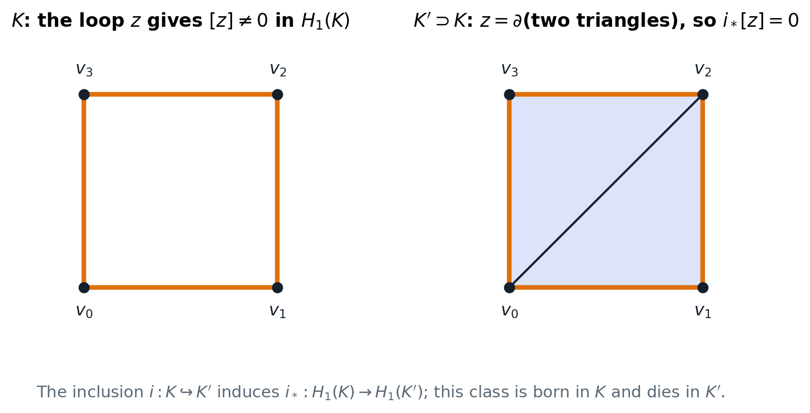

The part of homology theory that TDA actually uses: simplices, simplicial complexes, chains, the boundary map,
homology groups and Betti numbers, coefficients, maps induced by inclusions, and homotopy invariance.
Definitions and statements only, no proofs. Every figure in this note was drawn for it.
Reference: A. Hatcher, Algebraic Topology, Chapter 2 (Sections 2.1 and the first part of 2.2).
Sections of the book that are not needed for TDA are listed at the end, so you know what was left out and why.
Choi Sejin · Sogang University, Mathematics · October 2026
0. Why TDA needs homology
TDA builds a shape out of data points and then asks: how many pieces does the shape have, how many holes, how many
enclosed voids? Homology is the tool that turns these questions into numbers that a computer can calculate.
Three ideas carry the whole subject:
A shape is cut into simple building blocks (simplices): points, segments, triangles, tetrahedra.
A boundary map $\partial$ records which blocks sit on the edge of which other blocks. The key fact is $\partial\partial=0$.
Homology counts the cycles that are not boundaries. The counts are the Betti numbers
$b_0$ (pieces), $b_1$ (loops), $b_2$ (voids).
Persistent homology (study note 2) adds one more idea: when the shape grows, an inclusion map between the small shape and
the big shape tells us which holes survive and which get filled in. So this note ends with maps between complexes.
1. Simplices
Definition. An $n$-simplex is the smallest convex set containing $n+1$ points
$v_0,\dots,v_n$ that do not all lie in a hyperplane of dimension less than $n$. We write it $[v_0,\dots,v_n]$.
The points $v_i$ are its vertices, and $n$ is its dimension.

Figure 1. Simplices of dimension 0, 1, 2, 3. The arrows show the orientation given by the order of the vertices.
"Do not lie in a hyperplane of dimension less than $n$" just means the points are in general position: three points are not on
one line, four points are not on one plane. Then the convex hull really has dimension $n$.
Standard simplex.
$$\Delta^n=\Big\{(t_0,\dots,t_n)\in\mathbb{R}^{n+1}\;\Big|\;\textstyle\sum_i t_i=1,\ t_i\ge 0\Big\}.$$
Any $n$-simplex $[v_0,\dots,v_n]$ is the image of $\Delta^n$ under the linear map $(t_0,\dots,t_n)\mapsto\sum_i t_i v_i$.
The numbers $t_i$ are the barycentric coordinates of a point of the simplex.
Faces. Deleting one vertex $v_i$ gives an $(n-1)$-simplex
$[v_0,\dots,\hat v_i,\dots,v_n]$ (the hat means "leave this one out"), called a face. The union of all faces is the
boundary $\partial\Delta^n$; the rest is the open simplex $\mathring{\Delta}^n=\Delta^n-\partial\Delta^n$.
Orientation. Writing the vertices in a fixed order $[v_0,\dots,v_n]$ gives the simplex an
orientation. Swapping two vertices reverses it: $[v_1,v_0]=-[v_0,v_1]$. Orientation is what makes the signs in the boundary
formula below work. (With $\mathbb{Z}/2$ coefficients, which TDA software uses, signs disappear; see Section 6.)
2. Simplicial complexes
A single simplex is boring. Shapes are built by gluing simplices along faces.
Definition (abstract simplicial complex). Let $V$ be a finite set of vertices. An
abstract simplicial complex $K$ is a family of non-empty finite subsets of $V$ such that
every one-point set $\{v\}$, $v\in V$, is in $K$, and
if $\sigma\in K$ and $\tau\subseteq\sigma$ is non-empty, then $\tau\in K$ (closed under taking faces).
A set $\sigma\in K$ with $k+1$ elements is a $k$-simplex of $K$.
This is the version TDA uses: the Vietoris–Rips complex of study note 2 is exactly a family of vertex sets closed under subsets.
Drawing it in space (a geometric realization) is only for pictures.

Figure 2. Left: a complex with vertices $a,\dots,g$. The triangle $\{d,e,f\}$ is filled (it is a 2-simplex of $K$), the triangle
$\{a,b,c\}$ is hollow (only its three edges are in $K$). Right: the two 1-cycles that will matter in Section 5.
Hatcher's $\Delta$-complexes. Hatcher defines homology for $\Delta$-complexes: a space $X$ with
a collection of maps $\sigma_\alpha:\Delta^n\to X$ such that (i) each $\sigma_\alpha$ is injective on the open simplex and every point
of $X$ is in exactly one such open image, (ii) the restriction of $\sigma_\alpha$ to a face is again one of the maps $\sigma_\beta$,
and (iii) $A\subset X$ is open iff every $\sigma_\alpha^{-1}(A)$ is open. A $\Delta$-complex may glue a simplex to itself (the torus
can be made from two triangles). An abstract simplicial complex is a special case where every simplex is determined by its vertex set.
For TDA the special case is all we need.
3. Chains
Definition. Let $K$ be a simplicial complex and let $R$ be a ring of coefficients
($\mathbb{Z}$, or a field such as $\mathbb{Z}/2$ or $\mathbb{Q}$). The $n$-chains $C_n(K)$ are the formal sums
$$c=\sum_\alpha r_\alpha\,\sigma_\alpha,\qquad r_\alpha\in R,$$
one coefficient for each $n$-simplex $\sigma_\alpha$ of $K$. Chains are added coefficient by coefficient.
With $R=\mathbb{Z}$, $C_n(K)$ is the free abelian group with basis the $n$-simplices (Hatcher's definition);
with a field $R$, $C_n(K)$ is a vector space whose dimension is the number of $n$-simplices.
A chain is a way to say "these simplices, with these multiplicities". A 1-chain is a bunch of edges, a 2-chain a bunch of triangles.
Over $\mathbb{Z}/2$ the coefficients are $0$ or $1$, so a chain is just a set of simplices and $c+c=0$.
4. The boundary map
Definition. The boundary map $\partial_n:C_n(K)\to C_{n-1}(K)$ is the linear map defined on each
$n$-simplex by
$$\partial_n[v_0,\dots,v_n]=\sum_{i=0}^{n}(-1)^i\,[v_0,\dots,\hat v_i,\dots,v_n],$$
the alternating sum of the faces. For $n=0$, $\partial_0=0$.
Examples: $\partial[v_0,v_1]=v_1-v_0$ (end minus start), and $\partial[v_0,v_1,v_2]=[v_1,v_2]-[v_0,v_2]+[v_0,v_1]$, the three
edges going around the triangle in a consistent direction.

Figure 3. The boundary of a triangle is its three edges with signs that make them run around the triangle. Taking the boundary again,
each vertex receives one $+1$ and one $-1$, so the result is zero.
Fundamental fact (Hatcher Lemma 2.1). $\;\partial_{n-1}\circ\partial_n=0$ for every $n$.
In words: the boundary of a boundary is empty. Therefore $\operatorname{im}\partial_{n+1}\subseteq\ker\partial_n$.
Chain complex. The sequence
$$\cdots\xrightarrow{\partial_{n+2}}C_{n+1}(K)\xrightarrow{\partial_{n+1}}C_n(K)\xrightarrow{\partial_n}C_{n-1}(K)\xrightarrow{\partial_{n-1}}\cdots\xrightarrow{\partial_1}C_0(K)\xrightarrow{\partial_0}0$$
with $\partial\partial=0$ is called the simplicial chain complex of $K$.
5. Cycles, boundaries, homology, Betti numbers
Definitions.
$Z_n(K)=\ker\partial_n$ are the $n$-cycles: chains with empty boundary (closed loops, closed surfaces).
$B_n(K)=\operatorname{im}\partial_{n+1}$ are the $n$-boundaries: chains that are the boundary of something one dimension higher.
Because $\partial\partial=0$, $B_n\subseteq Z_n$. The $n$-th homology group is the quotient
$$H_n(K)=Z_n(K)/B_n(K)=\ker\partial_n/\operatorname{im}\partial_{n+1}.$$
Two cycles $z,z'$ are homologous ($[z]=[z']$) if $z-z'$ is a boundary. An element $[z]\in H_n$ is a homology class.
The $n$-th Betti number is $b_n=\operatorname{rank}H_n(K)$ (over $\mathbb{Z}$) or $b_n=\dim H_n(K)$ (over a field).
The slogan: homology counts cycles that are not filled in. A loop that bounds a filled region is "trivial"; a loop around a hole is not.
group
what a class looks like
$b_n$ counts
$H_0$
a vertex, up to walking along edges
connected pieces (components)
$H_1$
a closed loop of edges, up to filled triangles
independent loops (holes you can put a finger through)
$H_2$
a closed surface of triangles, up to filled tetrahedra
enclosed voids (hollow spaces)
Worked example (Figure 2, coefficients $\mathbb{Z}/2$)
The complex has 7 vertices, 7 edges and 1 triangle, so $\dim C_0=7$, $\dim C_1=7$, $\dim C_2=1$.
$H_0$. Two vertices are homologous exactly when a path of edges joins them ($a-b=\partial[a,b]$ is a boundary, and so on).
Vertices $a,\dots,f$ are all joined; $g$ is alone. So $b_0=2$.
$H_1$. The 1-cycles are generated by the two triangle outlines $z_1=\{ab,bc,ca\}$ and $z_2=\{de,ef,fd\}$
(the connecting edge $bd$ is in no cycle). $z_2=\partial\{d,e,f\}$ is a boundary; $z_1$ is not, because no 2-simplex has it as boundary.
So $H_1$ is spanned by $[z_1]$ and $b_1=1$.
$H_2$. The only 2-chain is the triangle itself, and its boundary is $z_2\ne0$, so there are no 2-cycles: $b_2=0$.
How a computer does this. Write $\partial_n$ as a matrix (rows = $(n-1)$-simplices, columns = $n$-simplices).
Then $\dim Z_n=\#\{n\text{-simplices}\}-\operatorname{rank}\partial_n$, $\dim B_n=\operatorname{rank}\partial_{n+1}$, and
$b_n=\dim Z_n-\dim B_n$. Homology is linear algebra.
6. Standard examples and the Euler characteristic

Figure 4. The three shapes every TDA tutorial uses. A triangulated circle, sphere and torus give these Betti numbers,
and (by homotopy invariance, Section 9) so does any other triangulation.
space
$H_0$
$H_1$
$H_2$
reading
point, filled disk, filled ball
$\mathbb{Z}$
$0$
$0$
one piece, nothing else
circle $S^1$ (and the annulus, the Möbius band)
$\mathbb{Z}$
$\mathbb{Z}$
$0$
one loop
sphere $S^2$
$\mathbb{Z}$
$0$
$\mathbb{Z}$
one void, no loop
torus $T^2$
$\mathbb{Z}$
$\mathbb{Z}\oplus\mathbb{Z}$
$\mathbb{Z}$
two loops (around and through), one void
two disjoint circles
$\mathbb{Z}^2$
$\mathbb{Z}^2$
$0$
two pieces, two loops
Reduced homology. It is often convenient to not count the "obvious" component. The
reduced groups $\tilde H_n(K)$ satisfy $\tilde H_n=H_n$ for $n\ge1$ and $H_0=\tilde H_0\oplus\mathbb{Z}$, so $\tilde b_0=b_0-1$.
In a persistence barcode, $H_0$ always has exactly one bar that never dies; that bar is the difference between $H_0$ and $\tilde H_0$.
Euler characteristic. For a finite complex with $k_n$ simplices of dimension $n$,
$$\chi(K)=\sum_n(-1)^n k_n=\sum_n(-1)^n b_n .$$
The left side is a count of simplices, the right side a count of holes; the equality is a quick sanity check.
Figure 2: $7-7+1=1$ and $b_0-b_1+b_2=2-1+0=1$. Sphere: $1-0+1=2$; torus: $1-2+1=0$.
7. Coefficients: $\mathbb{Z}$ versus a field
Hatcher works mostly over $\mathbb{Z}$. TDA software (ripser, GUDHI, giotto-tda) works over a field, almost always $\mathbb{Z}/2$.
Three reasons:
Over a field, every $H_n(K)$ is a vector space, so it is described completely by one number, $b_n=\dim H_n$. No torsion to keep track of.
Over $\mathbb{Z}/2$ there are no signs: $\partial[v_0,v_1,v_2]=[v_1,v_2]+[v_0,v_2]+[v_0,v_1]$ and orientations can be ignored.
The matrix of $\partial$ has entries $0/1$ and is reduced with XOR operations, which is very fast.
The structure theorem for persistence (study note 2, Section 5) needs field coefficients.
When $\mathbb{Z}$ and $\mathbb{Z}/2$ disagree. Over $\mathbb{Z}$ a homology group can have
torsion: the Klein bottle has $H_1=\mathbb{Z}\oplus\mathbb{Z}/2$, the projective plane $\mathbb{RP}^2$ has $H_1=\mathbb{Z}/2$, $H_2=0$.
Over $\mathbb{Z}/2$ the same spaces give $b_1=2,b_2=1$ (Klein bottle) and $b_1=1,b_2=1$ ($\mathbb{RP}^2$). So $\mathbb{Z}/2$ Betti numbers
are not always the "integer" ones. For point clouds sampled from everyday shapes (circles, blobs, surfaces in $\mathbb{R}^3$) this almost never
matters, and ripser lets you choose another prime $p$ if you want to check.
8. Maps between complexes and the maps they induce
This section is the engine of persistent homology. It answers: if a complex $K$ sits inside a bigger complex $K'$, what happens to
the homology classes of $K$?
Simplicial map and chain map. A map $f:K\to K'$ that sends vertices to vertices and every simplex of $K$
to a simplex of $K'$ (possibly of lower dimension, if two vertices collapse) is a simplicial map. It induces a linear map on chains
$f_\#:C_n(K)\to C_n(K')$ (a simplex that collapses is sent to $0$). This map commutes with the boundary:
$$\partial\,f_\#=f_\#\,\partial ,$$
and any family of linear maps $C_n(K)\to C_n(K')$ with this property is called a chain map.
Induced map on homology. Because $f_\#$ commutes with $\partial$, it sends cycles to cycles and boundaries to
boundaries, so it gives a well-defined homomorphism
$$f_*:H_n(K)\to H_n(K'),\qquad f_*[z]=[f_\#z].$$
Two rules (functoriality): $(g\circ f)_*=g_*\circ f_*$ and $(\mathrm{id})_*=\mathrm{id}$.
The case TDA needs is the simplest one: $K\subseteq K'$ is a subcomplex and $f=i$ is the inclusion. Then $i_\#$ just reads a chain of
$K$ as a chain of $K'$, and $i_*:H_n(K)\to H_n(K')$ asks: is this cycle still a hole in the bigger complex, or has it been filled in?

Figure 5. In $K$ the square is a hollow loop, $b_1(K)=1$. In $K'$ two triangles are added, the loop becomes a boundary, and
$i_*$ sends its class to $0$: $b_1(K')=0$. In persistence language, this class is born in $K$ and dies in $K'$.
Three things $i_*$ can do to a class $[z]\in H_n(K)$. (1) Keep it alive: $i_*[z]\ne0$. (2) Kill it: $i_*[z]=0$
because a new higher simplex filled it (Figure 5). (3) Merge it with another class: $i_*[z]=i_*[z']$ although $[z]\ne[z']$ in $K$,
because a new simplex made $z-z'$ a boundary. New classes can also be born in $K'$ that are not in the image of $i_*$.
Persistent homology is the bookkeeping of these events along a growing sequence $K_1\subseteq K_2\subseteq\cdots$.
9. Homotopy invariance (statement only)
Theorem (Hatcher 2.10 and Cor. 2.11). If two continuous maps $f,g:X\to Y$ are homotopic, then
$f_*=g_*:H_n(X)\to H_n(Y)$ for all $n$. Consequently, if $X$ and $Y$ are homotopy equivalent (there are $f:X\to Y$, $g:Y\to X$
with $g\circ f\simeq\mathrm{id}_X$ and $f\circ g\simeq\mathrm{id}_Y$), then $f_*$ is an isomorphism $H_n(X)\cong H_n(Y)$ for all $n$.
Why this matters for TDA, in two sentences. First, the Betti numbers depend only on the shape, not on how we cut it into simplices:
a circle made of 3 edges and a circle made of 300 edges have the same $H_1$. Second, a thick ring (annulus), a Möbius band and a thin
circle are all homotopy equivalent, so a point cloud sampled from any of them is expected to show "one loop" ($b_1=1$).
Singular homology, in one paragraph. To state the theorem for arbitrary spaces and arbitrary continuous maps, Hatcher
defines singular homology: $C_n(X)$ is generated by all continuous maps $\sigma:\Delta^n\to X$, with the same boundary formula.
Theorem 2.27 says that for a $\Delta$-complex the simplicial and singular groups agree. This is the reason it is safe to compute with
simplices and talk about the underlying shape. For TDA we only compute simplicial homology of finite complexes, so we take Theorem 2.27 as
given and never work with singular chains directly.
10. What was left out, and why
Hatcher topic
why TDA (Rips persistence) does not need it
Exact sequences, relative homology $H_n(X,A)$, long exact sequence of a pair
Persistence compares $H_n(K_\epsilon)$ and $H_n(K_{\epsilon'})$ through the map $i_*$ directly; the barcode is computed by matrix reduction, not through $H_n(K',K)$. (The pair sequence does appear in advanced topics such as extended persistence.)
Excision, Mayer–Vietoris
Tools for computing the homology of spaces by cutting them into pieces. We compute from an explicit finite complex instead.
Cellular homology, CW complexes, degree of a map
Efficient for hand computation of classical spaces; our complexes are given as simplex lists, so linear algebra on $\partial$ is enough.
Axioms for homology, categories and functors
Only the two functoriality rules of Section 8 are used.
Homology with general coefficients, torsion products
We fix the field $\mathbb{Z}/2$ (Section 7).
11. Glossary
$n$-simplex $[v_0,\dots,v_n]$
convex hull of $n+1$ points in general position
face
the simplex obtained by removing one vertex
simplicial complex $K$
a family of vertex sets closed under taking subsets
$C_n(K)$, $n$-chain
formal sums of $n$-simplices with coefficients in $R$
$\partial_n$
boundary map, alternating sum of faces; $\partial\partial=0$
$Z_n$, cycle
$\ker\partial_n$: chains with no boundary
$B_n$, boundary
$\operatorname{im}\partial_{n+1}$: chains that bound something
$H_n(K)=Z_n/B_n$
$n$-th homology group; its classes are cycles up to boundaries
$b_n$, Betti number
rank (or dimension) of $H_n$: pieces, loops, voids for $n=0,1,2$
linear map on chains that commutes with $\partial$
induced map, $f_*$
the map on homology, $f_*[z]=[f_\#z]$; functorial
homotopy invariance
homotopy equivalent spaces have isomorphic homology
References. A. Hatcher, Algebraic Topology, Cambridge University Press, 2002, Chapter 2.
H. Edelsbrunner and J. Harer, Computational Topology: An Introduction, AMS, 2010, Chapters III–IV.